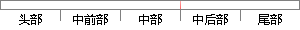

NB（负大）、NM（负中）、NS（负小）、ZO （零）、PS（正小）、PM（正中）、PB（正大）。 2 .规则
片段位置图

相似结果
相似片段：
，模糊控制器输出ΔUi是控制变化量Δui的模糊化变量；选择si、 ΔUi的基本论域为[-6，6]，在此论域上各分出7个模糊子集，即有： 其论域分别为： 其中，NB＝负大，NM＝负中，NS＝负小，ZO＝零，PS＝正小，PM＝正中，PB＝正大，设计模糊规则为： Rk：if s is Ak and is Bk then ΔU is Ck (18) 其中，k＝1，2，3，…n.Ak、Bk、Ck是si、 ΔUi各自对应论域上的模糊集；因此，得出满足条件的模糊控制规则，
| 对比库： | WriteCheck云资源库 |
| 来源： | google.com.na 查看来源 |
| 发布时间： | 2016-09-09 |
| 相似率 | 30% （轻度抄袭） |